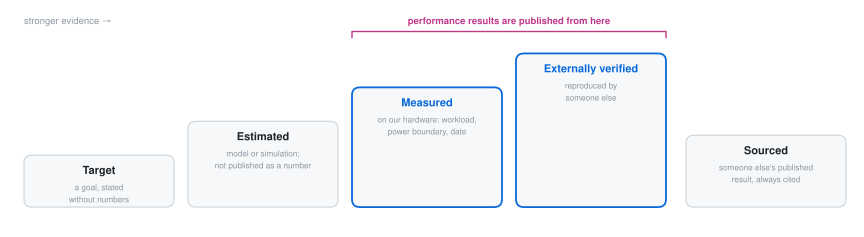

System Development Roadmap
A staged, evidence-grounded path from theoretical research to verified digital silicon.

Foundational R&D
Mathematical formulations of event encodings, numerical precision bounds, continuous-to-discrete LIF models, and golden software contract definition.
Prototype 0 Core
Design, formal verification, and multi-tool simulation of the first digital neuromorphic processing core, aligned bit-for-bit with OmniSim and OmniSDK.
Prototype 1 on FPGA
Hardware synthesis, board bring-up, and physical lab bench power/latency measurements across standardized acoustic and event-vision benchmarks.
Design Partner Pilots
Deploying FPGA evaluation kits and OmniSDK toolchains into pilot partner environments for real-world industrial and scientific edge monitoring trials.
Custom Edge Silicon
Tapeout and production of specialized event-driven digital application-specific integrated circuits (ASICs) optimized for microwatt to milliwatt edge deployments.
The Evidence Ladder & Reporting Standards
Why we refuse to publish unmeasured claims, speculative ratios, or subjective superlatives.

No Performance Results Are Published Yet. Because Prototype 0 is currently in digital RTL simulation and formal verification, MorphoNerva deliberately does not publish energy, latency, or throughput figures. Estimates derived from simulation remain internal engineering signals. We publish numbers only once measured on physical silicon with verified power boundaries.
| Evidence Level | Definition & Evidence Requirement | Public Disclosure Policy |
|---|---|---|
| Target | Qualitative architectural objective or research goal (e.g., lower power for always-on sensing). | Stated qualitatively only. No numbers permitted. |
| Estimated | Derived from cycle-accurate simulation, formal verification, or synthesis reports. | Used internally for engineering trade-offs. Never published as a performance claim. |
| Measured | Physically characterized by MorphoNerva on physical hardware with stated workload, clock, and power boundary. | Published with full reproduction metadata (commit SHA, workload parameters, test harness). |
| Externally Verified | Independently replicated by an external customer, research lab, or independent test agency. | Published alongside third-party replication report. |
| Sourced | Peer-reviewed or public result published by an external research team. | Cited with complete public DOI or bibliographic reference; never claimed as our own. |